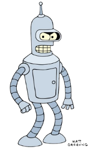

Бендер - комічний антигерой, сквернослов, алкоголік, завзятий курець сигар, шанувальник порнографії для роботів (у вигляді електричних схем), клептоман, кухар (його їжа в більшості випадків щонайменше неїстівна, часто небезпечна для життя). У критичній ситуації часто єдиний, хто впадає в паніку. У серії Benderama він був повним ледарем . Зазвичай Бендер поводиться як закінчений егоїст , цинік , мізантроп , проте зрідка в ньому прокидається співчуття (наприклад, до черепасі в епізоді « Crimes of the Hot») І дружня прихильність до Фраю . У деяких епізодах Футурами Бендер є головною дійовою особою. Уже в першому епізоді мультсеріалу Бендер порушує всі три закони робототехніки - дивиться, як б'ють людину, відмовляється йому допомагати і намагається накласти на себе руки!
